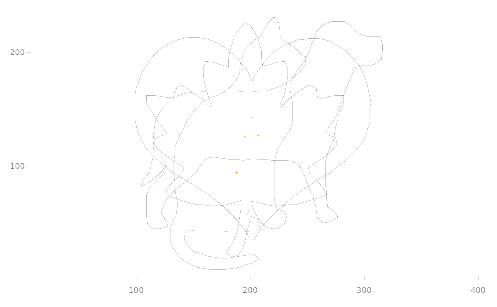
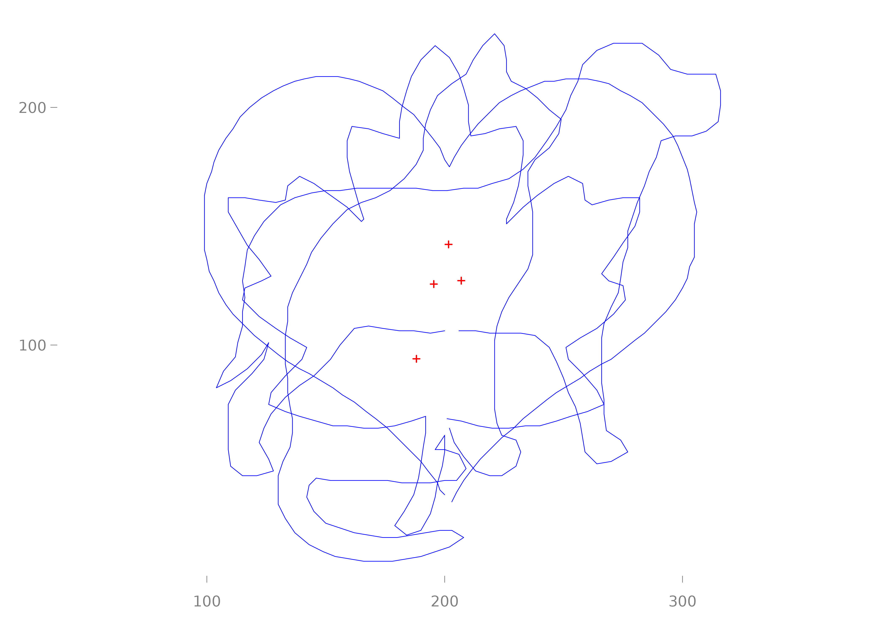
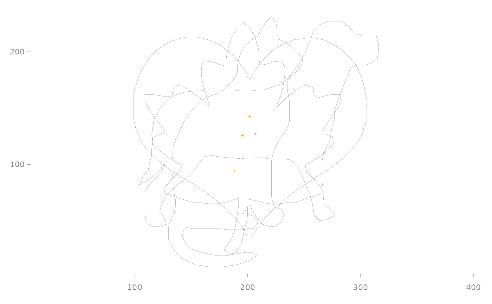
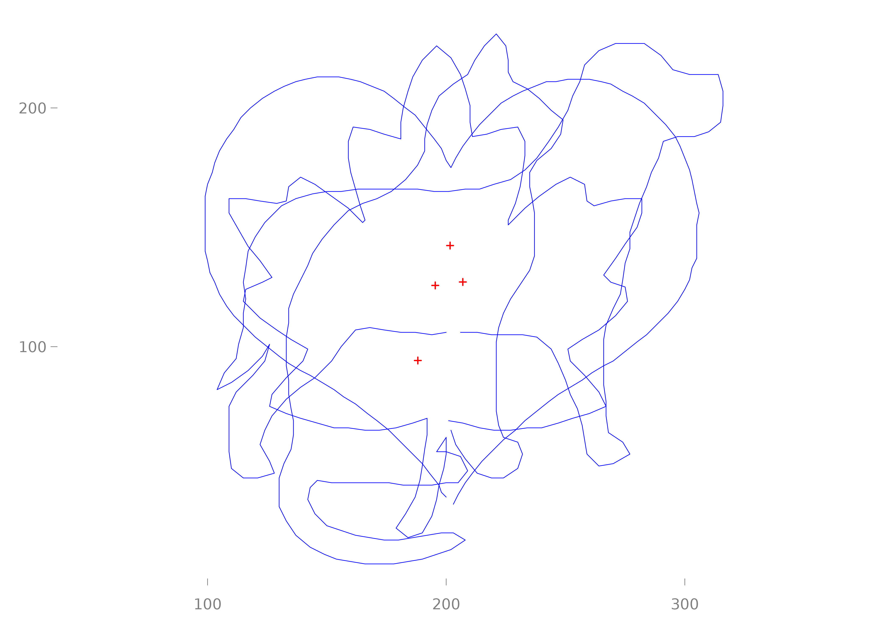

A collection of functions for creating clean, publication-ready visualizations
of morphometric data. The p() function initializes a minimal plot, and
draw_* functions add layers. All functions return their input invisibly,
enabling pipe-friendly workflows.
Usage
p(x, xlim, ylim, axes = TRUE)
draw_landmarks(x, col = "grey20", pch = 3, cex = 0.25, ...)
draw_landmarks_as_numbers(x, col = "grey20", pch = 3, cex = 0.5, ...)
draw_outlines(x, col = "grey20", lwd = 0.2, ...)
draw_centroid(x, col = "orange", cex = 1/4, pch = 3, ...)
draw_first_point(x, col = "grey20", cex = 1/3, label = "v", ...)
draw_links(x, links, col = "grey20", lwd = 0.5, ...)Arguments
- x
A matrix (single shape) or list of matrices containing (x, y) coordinates
- xlim
Numeric vector of length 2 giving x-axis limits. If missing, calculated from data
- ylim
Numeric vector of length 2 giving y-axis limits. If missing, calculated from data
- axes
Logical. Whether to draw axes.
- col
Character. Color for points, lines, or axes
- pch
Integer. Point character type
- cex
Numeric. Character/point expansion factor
- ...
Additional graphical parameters passed to underlying functions
- lwd
Numeric. Line width
- label
Character. Label to display at first point (default: "v")
- links
A two-column matrix where each row defines a segment. First column is the start landmark index, second column is the end landmark index. This matrix is recycled across all shapes in
x.
Details
p(): The base plotter function that opens a device, sets up minimal axes with 1:1 aspect ratio, and prepares the plot area.
draw_landmarks(): Adds landmark points to the current plot.
draw_outlines(): Draws outline curves by connecting coordinates with lines.
draw_centroid(): Marks the centroid (mean x, mean y) of each shape.
draw_first_point(): Marks the first point with a rotated label that points from the first toward the second point.
Examples
# Basic plotting
shapes[1] %>% p() %>% draw_outlines()
 shapes %>% p() %>% draw_outlines()
# Chaining draw functions
p(shapes) |> draw_outlines() |> draw_centroid()

# With custom styling
p(shapes) |>
draw_outlines(col = "blue", lwd = 0.5) |>
draw_centroid(col = "red", cex = 0.5)

# dummy links, mosquito people please have mercy!
shapes %>% p() %>% draw_outlines()
# Chaining draw functions
p(shapes) |> draw_outlines() |> draw_centroid()

# With custom styling
p(shapes) |>
draw_outlines(col = "blue", lwd = 0.5) |>
draw_centroid(col = "red", cex = 0.5)

# dummy links, mosquito people please have mercy!